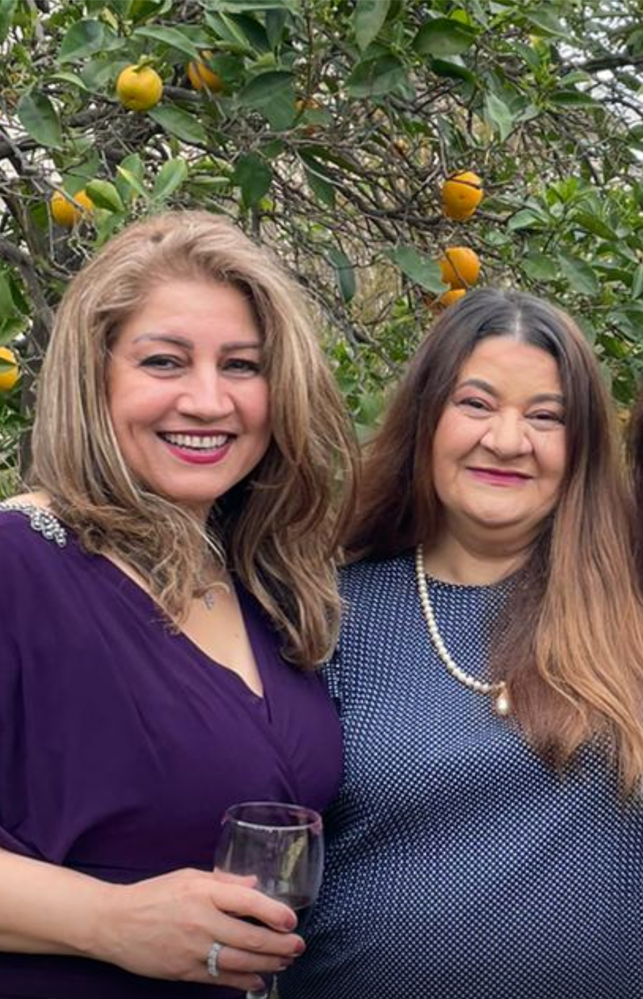

- Menu
- About us
- Contact
Delicious Kitchen Delights
Freshly prepared meals delivered to your door. Enjoy homemade dishes made with love and the finest ingredients, right from our kitchen to your table.

Freshly prepared meals delivered to your door. Enjoy homemade dishes made with love and the finest ingredients, right from our kitchen to your table.

Halim is a hearty, slow-cooked blend of grains, lentils, and meat, seasoned with spices and garnished with crispy onions and herbs.
:max_bytes(150000):strip_icc()/aash-reshteh-recipe-5219123-bahareh-niati-2022-bb2a6cc34f5848c5bb78127266d050f9.jpg)
Ash Reshteh is a savory Persian soup with noodles, beans, and herbs, offering a rich and comforting taste.

Abgoosht is a hearty Persian stew with tender meat, chickpeas, and potatoes in a flavorful, spiced broth.

Gheymeh is a flavorful Persian stew made with tender meat, split peas, and dried limes, simmered in a spiced tomato sauce for a rich, savory dish.
Sign up for our kitchen by clicking that button right nover here